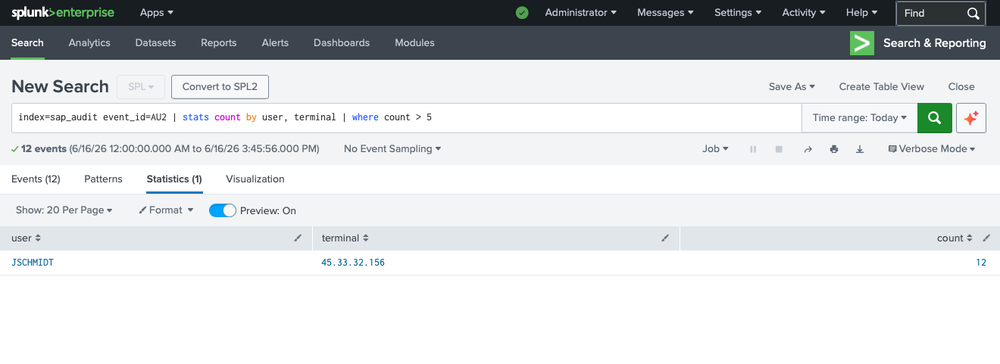
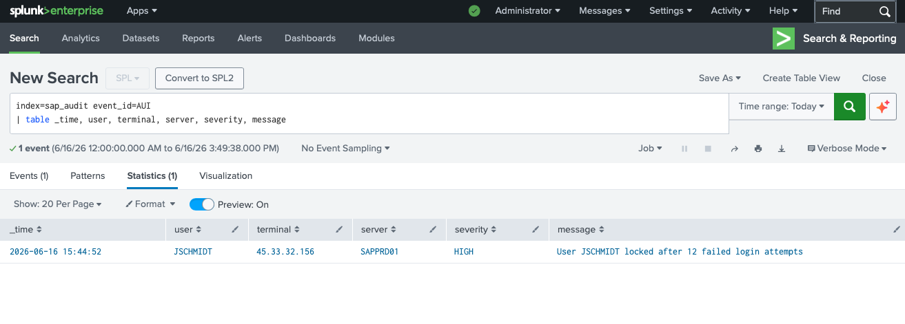

Lab-Aufbau
Dieselbe Terraform + Docker Infrastruktur wie in allen meinen SOC-Labs — einmal aufgebaut,
jederzeit reproduzierbar. Splunk Enterprise läuft als Docker-Container auf meinem Mac mini M4,
mit einem dedizierten
sap_audit-Index,
der Events über den HTTP Event Collector (HEC) empfängt.
Anstatt ein vollständiges SAP-NetWeaver-System aufzusetzen, habe ich ein Python-Skript geschrieben, das authentische SAP Security Audit Log Events im korrekten Format generiert und direkt über HEC an Splunk sendet. Dieser Ansatz wird auch in Red-Team-Simulationen und bei der SIEM-Validierung eingesetzt.
Das SAP Security Audit Log
Das SAP Security Audit Log (SAL) — erreichbar über Transaktion
SM20 —
ist die primäre Datenquelle für die SAP-Bedrohungserkennung. Es protokolliert jeden
sicherheitsrelevanten Vorgang: Anmeldungen, fehlgeschlagene Authentifizierungen,
Transaktionsstarts, Berechtigungsfehler und RFC-Aufrufe.
Warum SAP-Logs im SOC entscheidend sind: SAP-ERP-Systeme speichern die sensibelsten Unternehmensdaten — Finanzdaten, HR-Informationen, Kundendaten. Ein Angreifer mit SAP-Zugang kann alles extrahieren, ohne einen einzigen Endpoint anzufassen — und umgeht damit EDR und netzwerkbasierte Erkennung vollständig.
Die im Lab überwachten Event-IDs:
Falsches Passwort oder gesperrter Benutzer. Primärer Indikator für einen Brute-Force-Angriff.
Nach einem Sturm von AU2-Events bedeutet ein AU1 von derselben IP: die Credentials wurden geknackt.
Konto automatisch gesperrt, nachdem der Fehlversuch-Schwellenwert überschritten wurde.
Benutzer hat versucht, auf eine Ressource oder Transaktion ohne ausreichende Berechtigung zuzugreifen.
Eine SAP-Transaktion (TCode) wurde ausgeführt. Kritische TCodes wie SE38, SU01, PFCG gelten als Hochrisiko.
Fehlgeschlagene Remote-Function-Call-Authentifizierung — typisch bei externem SAP-Angriffs-Tooling.
Direkter Datenbankzugriff. Das Lesen von USR02 oder AGR_USERS ist ein starkes Warnsignal.
ABAP-Report ausgeführt. Benutzer-Enumerierungs-Reports wie RSUSR002 außerhalb der Geschäftszeiten sind verdächtig.
Der Angriff — Brute-Force-Szenario
Der simulierte Angreifer zielt auf das SAP-Produktivsystem SAPPRD01, Mandant 100.
Er hat den Benutzernamen JSCHMIDT
über OSINT oder eine vorgelagerte Reconnaissance-Phase identifiziert und beginnt,
die Login-Schnittstelle von einer externen IP-Adresse aus anzugreifen.
Angreifer-IP: 45.33.32.156 — eine bekannte Scan-IP-Adresse außerhalb des Unternehmensnetzwerks. Kein VPN, keine interne IP — dies ist ein direkter Angriff auf ein internet-exponiertes SAP-System.
Attack-Timeline
Der Angreifer sendet Login-Anfragen an SAPPRD01, Ziel ist Benutzer JSCHMIDT. Erstes AU2-Event wird generiert.
Zwölf fehlgeschlagene Anmeldeversuche in rascher Folge von 45.33.32.156. Jeder Versuch erzeugt ein AU2-Event im Security Audit Log.
Die automatische Sperrrichtlinie von SAP greift. Benutzer JSCHMIDT wird gesperrt. Severity: HIGH. Der Angreifer ist blockiert — aber der Benutzer ist ebenfalls ausgesperrt.
Der echte JSCHMIDT meldet sich von der internen IP 10.10.1.42 an, nachdem das Konto vom Basis-Team entsperrt wurde. Normalbetrieb wird wiederhergestellt.
Erkennung — Splunk SPL-Queries
Query 1 — Brute-Force-Quelle identifizieren
Die erste Query findet alle Benutzer, die mehr als 5 fehlgeschlagene Login-Versuche (AU2) erhalten haben, und gruppiert sie nach Quell-IP. Eine einzelne IP, die mehrfach gegen dasselbe Konto vorgeht, ist das klassische Brute-Force-Muster.

Abb. 1 — Ergebnis: Benutzer JSCHMIDT wurde 12-mal von der externen IP 45.33.32.156 angegriffen
Das Ergebnis ist eindeutig: ein Benutzer, eine Angreifer-IP, zwölf Versuche. In einer Produktionsumgebung würde dies sofort einen P1-Alert und eine IP-Sperrung auf Firewall-Ebene auslösen.
Query 2 — Kontosperrung bestätigen
Ein Brute-Force-Angriff, der unterhalb des Sperrschwellenwerts bleibt, ist weitaus gefährlicher als einer, der erwischt wird. Das AUI-Event bestätigt, dass die Sperrung tatsächlich ausgelöst wurde — und zeigt genau, wann es passiert ist, welcher Server betroffen war und die Severity-Einstufung.

Abb. 2 — JSCHMIDT auf SAPPRD01 gesperrt — Severity HIGH — "User JSCHMIDT locked after 12 failed login attempts"
Das AUI-Event liefert den abschließenden Beweis. Wir haben nun das vollständige Bild: Angreifer-IP → betroffenes Konto → Sperrungs-Event → betroffenes Produktivsystem. Das ist alles, was für ein Incident-Ticket benötigt wird.
Incident-Zusammenfassung
| ZEIT | EVENT-ID | BENUTZER | QUELL-IP | SERVER | SEVERITY |
|---|---|---|---|---|---|
| 09:00–09:12 | AU2 × 12 | JSCHMIDT | 45.33.32.156 | SAPPRD01 | HIGH |
| 09:13 | AUI | JSCHMIDT | 45.33.32.156 | SAPPRD01 | HIGH |
| 09:45 | AU1 | JSCHMIDT | 10.10.1.42 | SAPPRD01 | INFO |
Wichtige Erkenntnisse
45.33.32.156 ist eine bekannte Scan-IP ohne Geschäftsbeziehung zur Organisation. Direkter Internet-Zugang zum SAP-GUI-Port ist eine kritische Fehlkonfiguration — SAP sollte niemals direkt im Internet exponiert sein, ohne WAF oder SAP Web Dispatcher.
Obwohl die Sperrrichtlinie den Brute-Force gestoppt hat, war auch der legitime Benutzer JSCHMIDT ausgesperrt. Ein Angreifer kann dies gezielt einsetzen, um wichtige SAP-Benutzer (Buchhaltung, HR) während kritischer Geschäftszeiten zu sperren.
Der Angreifer wusste, dass JSCHMIDT ein gültiger Benutzername ist. SAPs Standard-Fehlermeldung unterscheidet zwar nicht zwischen "falscher Benutzer" und "falsches Passwort", aber Antwortzeit-Unterschiede können für die Enumeration ausgenutzt werden.
Die Kontosperrung hat nach 12 Versuchen korrekt ausgelöst. Ohne SIEM-Integration hätte dieses Event jedoch still im SM20-Log gelebt — unbemerkt, bis jemand manuell nachgeschaut hätte.
Empfehlungen
Einen SAP Web Dispatcher oder WAF vor alle SAP-Systeme schalten. Direkter Internet-Zugang zum SAP Router oder DIAG-Port ist ein kritisches Sicherheitsrisiko.
SIEM-Alert konfigurieren: >5 AU2-Events von derselben IP innerhalb von 10 Minuten = sofortiger P1-Alert. Nicht auf AUI warten — die Sperrung ist bereits zu spät.
SAP-Standard liegt oft bei 5–12 Versuchen. Für privilegierte Benutzer (SAPABAP1, DDIC, SAP*) auf 3 reduzieren. Hochwertige Konten brauchen engeren Schutz.
AU2-Quell-IPs in die Firewall-Automatisierung einspeisen. Eine IP, die SAP-Login-Fehler generiert, sollte innerhalb von Minuten gesperrt werden — nicht Stunden.
Nächster Teil dieser Serie: Admin-Login außerhalb der Arbeitszeiten — ein privilegierter SAP-Benutzer (SAPABAP1) meldet sich um 02:30 Uhr von einer externen IP am Produktivsystem an und führt SE38, SU01 und PFCG aus. Alles detektiert mit Splunk SPL.